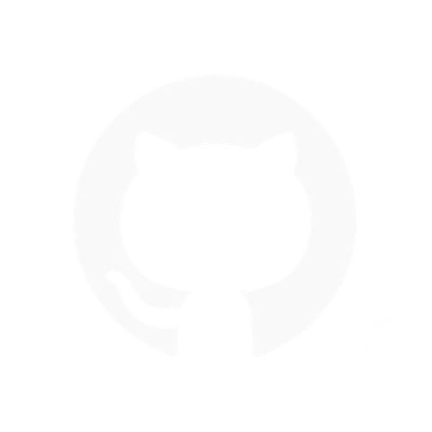

Projetos com contexto.
Capa, descrição e tecnologias. Só o que ajuda alguém a entender o que você fez.
Reúna seus projetos em um portfólio que mostra o que você construiu. Do GitHub para um único link, com contexto e clareza.
Comece grátis. Edite e publique no seu tempo.Exemplo de portfólio · componentes do produto
O repositório mostra o código. O portfólio reúne as decisões, as tecnologias e o resultado de cada projeto.
Você escolhe o que entra. O FolioDev cuida da apresentação.
Importe os repositórios que quer apresentar. Também pode adicionar projetos manualmente.
Reúna em pastas. Inclua descrição, tecnologias, imagens e o link do resultado.
Escolha um modelo, revise a página e use Deploy para colocar seu trabalho no ar.
Continue no cadastro e conecte sua conta com segurança.

Da organização dos projetos ao documento que seus visitantes vão abrir.
Capa, descrição e tecnologias. Só o que ajuda alguém a entender o que você fez.
Pastas para separar seus trabalhos. Uma página pública para apresentá-los.
Seu nome, seu contexto e seus projetos. Em uma página que cabe na conversa.
Compare os modelos e escolha a forma de mostrar seus projetos.
Avaliações fictícias para demonstrar esta seção.
Conheça a estrutura de planos do FolioDev. As assinaturas pagas estão em breve.
As respostas para começar com clareza.
Escolha seus projetos. Dê contexto ao que você construiu.
Criar meu portfólio